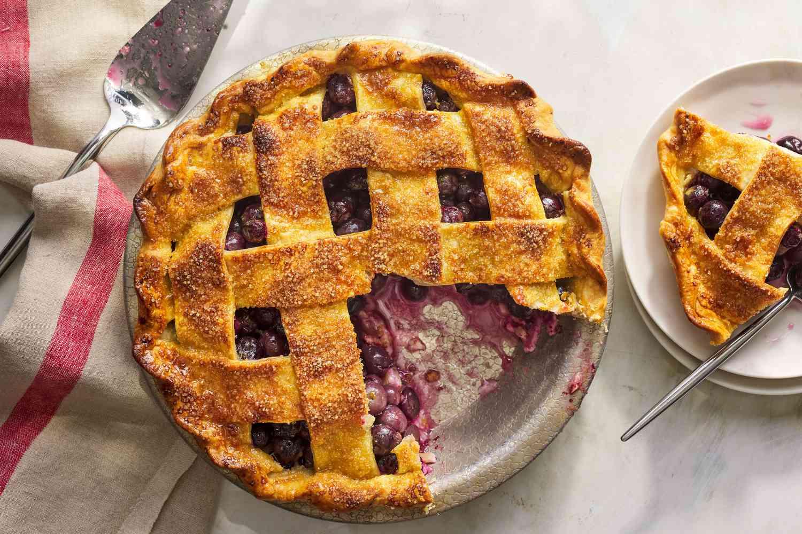

This true American classic consists of a thick, juicy blueberry filling enclosed between two layers of flaky, golden pastry. It first appeared in the written form in 1829, but its origin probably dates back to the early American pioneers. Even though it is traditionally associated with Maine, where it is declared as the official state dessert, the classic blueberry pie is a summer favorite enjoyed throughout the country, usually served with a scoop of ice cream or a dollop of whipped cream on the side.
Meal prep time : 2 hours 10 minutes
Servings : 8